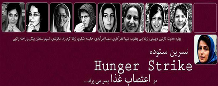

|
|
|
Browsing
Contact Us |
Campaigners |
Face to Face |
Tribune |
Interview |
News |
On the Web |
One Million |
Report
Farsi | Français | German | Italian | Spanish | العربية Also in this section
|
 Nine Female Political Prisoners Launch Hunger StrikeNasrin Sotoudeh Also on Hunger Strike is Banned From Visits for 3 Weeks Friday 2 November 2012 Change for Equality: According to reports published on the site of the reformist website Kalame, 9 more female prisoners in Evin Prison in Tehran, have launched a hunger strike to protest mistreatment by prison guards, including storming of the prison, inappropriate search of the premises and physical search of the women. Prior to this human rights lawyer and women’s rights activist Nasrin Sotoudeh had launched a hunger strike on 17 October, to protest the fact that she had been denied in-person visits with her family and a travel ban placed on her 12 year old daughter. Authorities have not taken any steps to meet the demands of Nasrin Sotoudeh, which are within her rights as a prisoner. To the contrary they have stepped up pressure on her, including banning her from visits with family all together for 3 weeks and attacking her in the state controlled media. Further it seems that the campaign of harassment has been stepped up to include all female prisoners in Evin’s Women’s Ward. The nine women going on hunger strike represent women activists, student activists, human rights defenders, journalists and political activists. They are objecting to demeaning and inappropriate behavior by guards during the search. The translation of the report published in Kalameh, courtesy of Banooyeh Sabz, appears below.
Pictured from left to right: Shiva Nazarahari, Bahareh Hedayat, Mahsa Amrabadi, Jila Baniyaghoub, Nazanin Deyhami, Hakimeh Shokri, Jila Karamzadeh Makvandi and Nasrin Sotoudeh. Not pictured: Rahele Zakaee. Nine Female Political Prisoners Launch Hunger Strike October 31st, 2012 - [Kaleme] A number of female political prisoners have launched a hunger strike protesting a recent attack of the female ward by Evin prison guards, leading to to the harassment and defamation of female political prisoners. The following 9 female political prisoners are amongst those protesting the inhumane action by Evin prison guards: Bahareh Hedayat, Nazanin Dihimi, Jila Baniyaghoub, Shiva Nazarahari, Mahsa Amrabadi, Hakimeh Shokri, Jila Karamzadeh Makvandi, Nasim Soltan Beygi and Raheleh Zakaii. According to Kalame 20 female prison guards participated in the attack on Evin’s female ward, harassing the prisoners, violating their privacy and personal space while aggressively searching the premise and their personal belongings. Faezeh Hashemi [the incarcerated daughter of Ayatollah Hashemi Rafsanjani], currently nominated as the lawyer and representative of the female prisoners (both political prisoners and other inmates) strongly protested the attack on the female ward. It has been reported that following the storming of the ward, the female political prisoners were evacuated into the small yard at the ward while their personal belongings were inspected - an act that the female prisoners vehemently protested. The Slogan Ya Hossein ... Mir Hossein... Once Again Echos through the Walls of Evin In an act of defiance towards the prison guards, the female political prisoners reported began chanting "Ya Hossein... Mir Hossein" and "Death to the Dictator" ... "Long Live Mousavi ... Long Live Karroubi".... They also sang the national anthem "Ey Iran" and other songs associated with the aftermath of the rigged presidential elections such as "Yare Dabestani" [ My childhood friend] and "Na Kharam na Khashak" [We are not riff raff] The female political prisoners on hunger strike are demanding an official apology from the prison officials and a guarantee that such an act is never repeated. The prison guards participating on the attack on the female prisoners According to a number of the prisoners present during the attack, Dardizadeh and Salami are two of the prison guards who behaved appallingly. insulting and harassing the female political prisoners while conducting bodily searches. It has been reported that the pressure on female political prisoners behind bars at Evin has increased significantly since Ali Ashraf Rashidi took over the ward. This pressure include the recent refusal of prison officials to provide prisoners with adequate medical care, bodily searches when entering and exiting and a higher level of interference with the day to day activities of the female prisoners has led to complaints by the prisoners behind bars. |